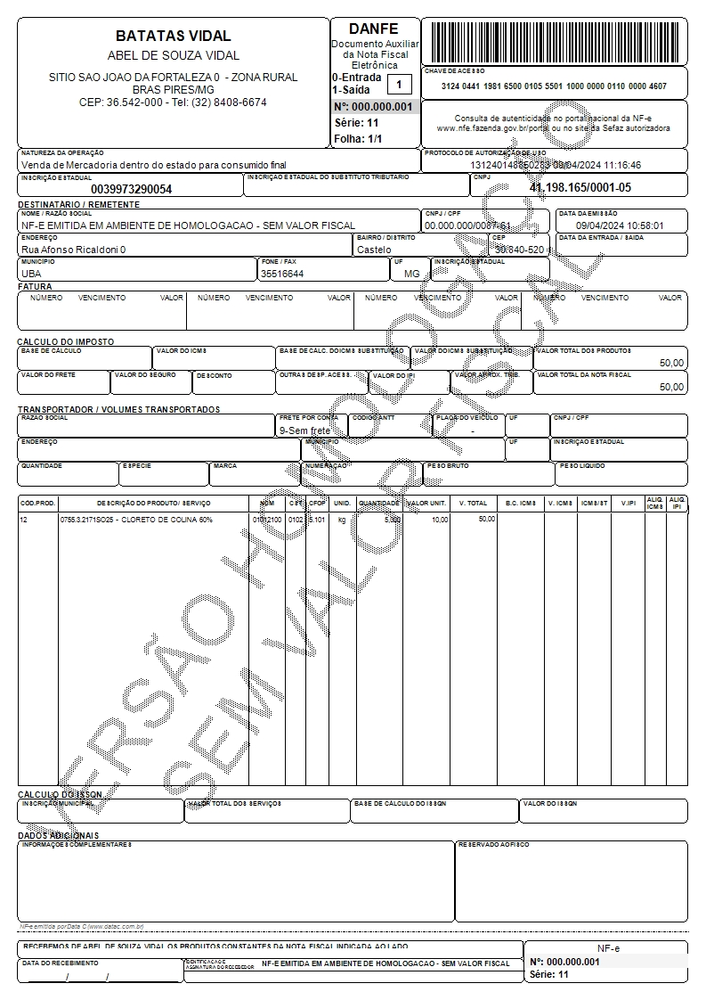
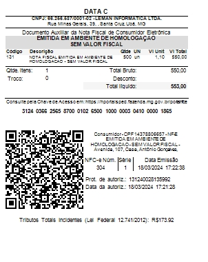
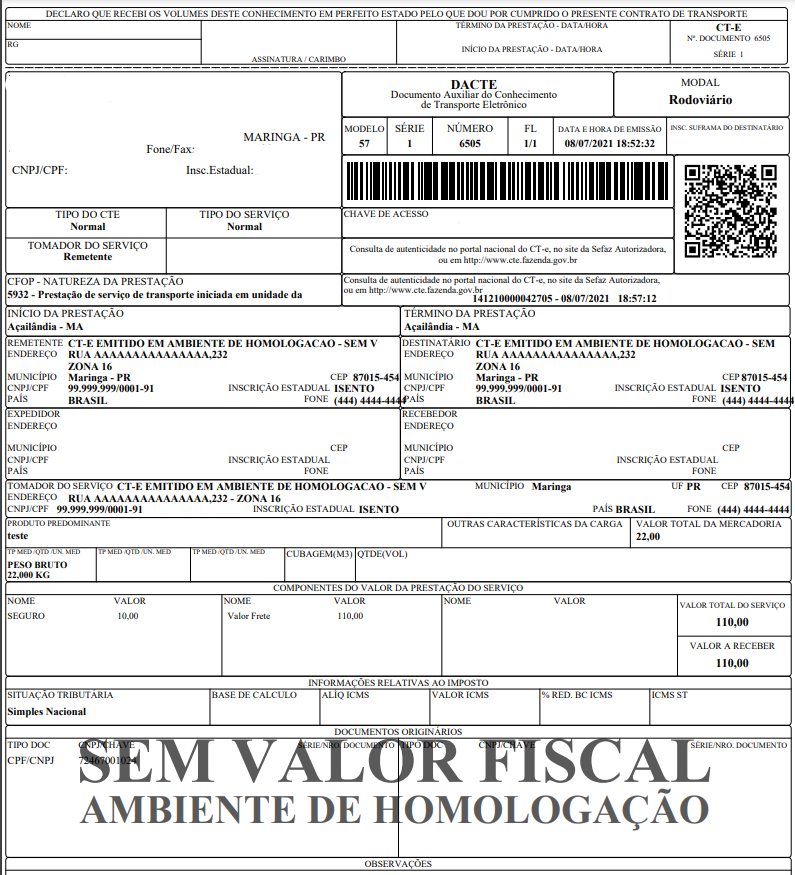
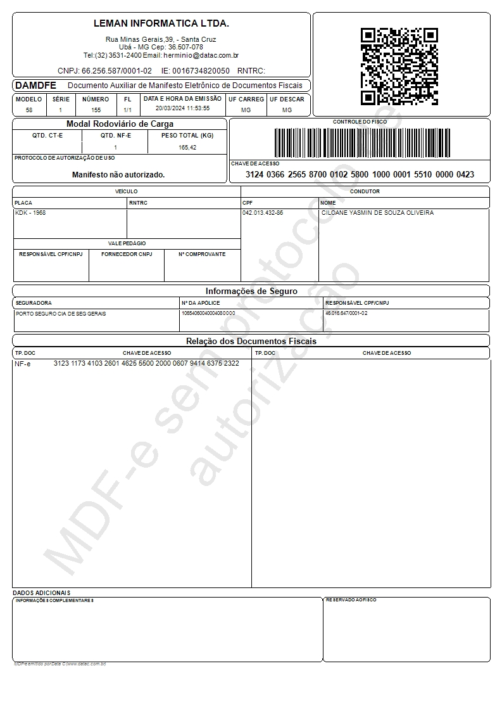
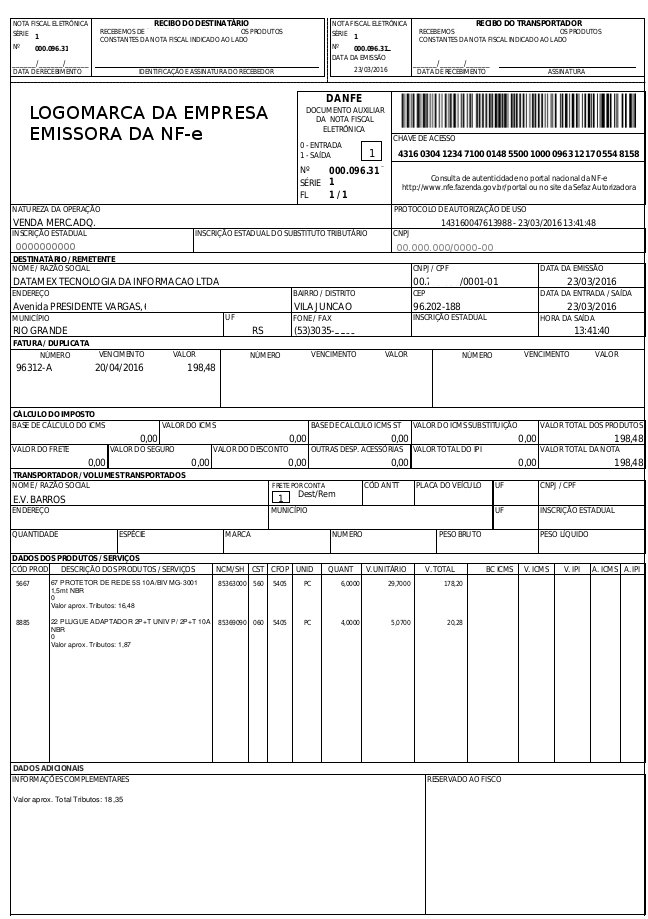
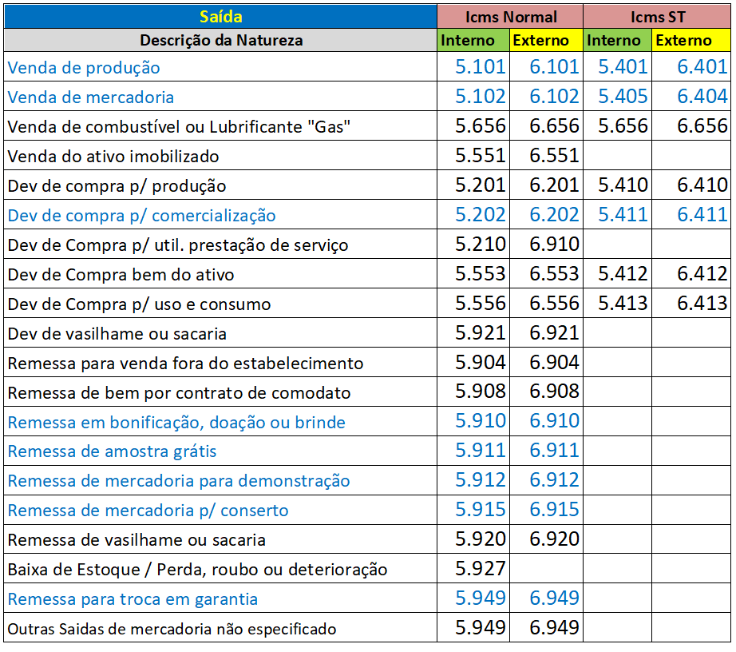
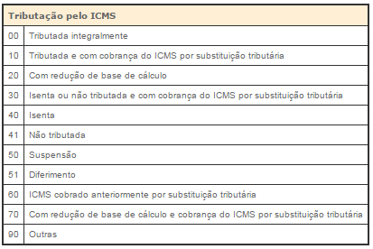
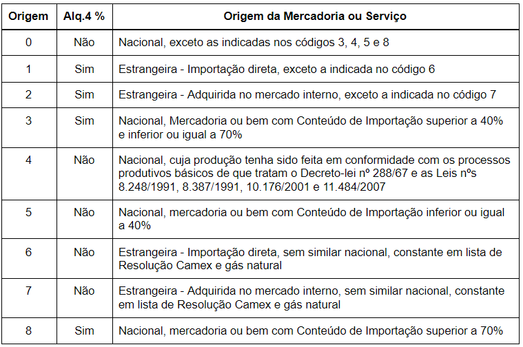
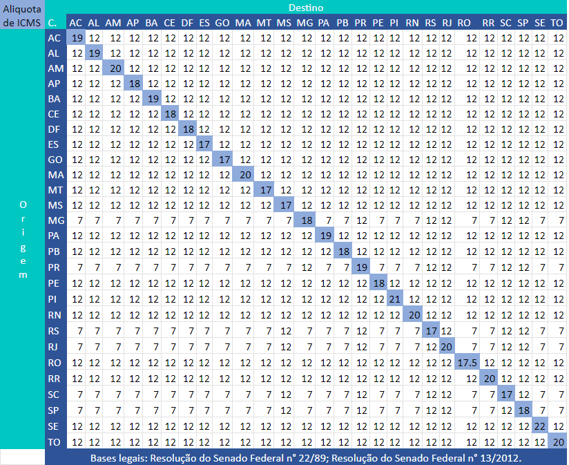
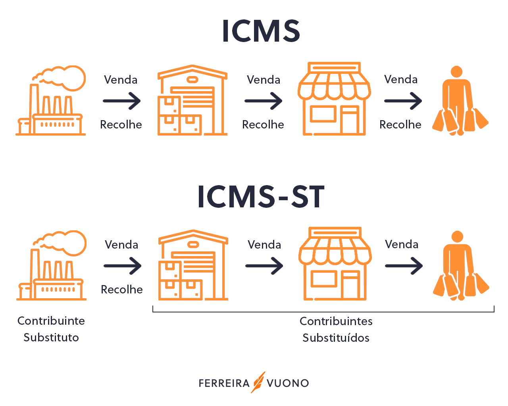

O que a DATA C faz?
A empresa Data C se destaca por desenvolver soluções de software altamente eficazes para superar desafios contábeis e de gestão. Especializada na área contábil e na geração de notas fiscais NF-e, NFC-e, MDF-e, CT-e, os serviços são cuidadosamente projetados para simplificar o controle de grandes volumes de dados, proporcionando uma organização eficiente.
Quais problemas a DATA C resolve?
Decisões ruins e má gestão:
-
Problema: Falta de assertividade e segurança nas tomadas de decisão, problemas com eficiência e pradonização de processos, custos e riscos operacionais.
-
Como resolver: Implementar controle de processos operacionais, segurança fiscal, controle de estoque e centralização de informações para facilitar a tomada de decisão.
Processos não automatizados
-
Problema: Falta de automação em processos que poderiam ser otimizados.
-
Como resolver: Automatizar processos que não exigem intervenção humana, aproveitando eficientemente os recursos disponíveis.
Nota Fiscal Eletrônica (NF-e)
O que é?
A Nota Fiscal de Produto Eletrônica formaliza a venda de produtos e serviços digitalmente.
Para que serve?
Formaliza transações de venda envolvendo prestador de serviço/vendedor, comprador e órgãos públicos.
Exemplo:
Nota Fiscal de Consumidor Eletrônica (NFC-e)
O que é?
Documento digital emitido para operações comerciais/vendas diretas ao consumidor final.
Para que serve?
Registra vendas diretas ao consumidor final, amplamente utilizado no comércio varejista.
Exemplo:
Conhecimento de Transporte Eletrônico (CT-e)
O que é?
Documento fiscal emitido por transportadoraas para cobrir o transporte de mercadorias.
Para que serve?
Certifica e ajuda a garantir a segurança das mercadorias e dos funcionários envolvidos no transporte.
Exemplo:
Manifesto de Documentos Fiscais (MDF-e)
O que é?
Padrão de documentação digital que substitui sistemas impressos.
Para que serve?
Vincula documentos fiscais transportados em unidade de carga.
Exemplo:
Arquivo XML
O que é?
Linguagem de marcação para definir e armazenar dados de maneira compartilhada.
Para que serve?
Facilita o intercâmbio de informações entre sistemas.
Documento Auxiliar da Nota Fiscal Eletrônica (DANFE)
O que é?
Representação física e simplificada da Nota Fiscal Eletrônica.
Para que serve?
Acompanha o trânsito da mercadoria, oferecendo uma versão legível da NF-e.
Exemplo:
Impostos Estaduais
CFOP (Código Fiscal de Operações e de Prestações)
O que é?
Código tributário brasileiro para pradonizar mercadorias e facilitar a regularização na Receita Federal.
Para que serve?
Identificar produtos circulando no país ou no exterior.
Exemplo:
CST (Código de Situação Tributária)
O que é?
Identificação numérica para classificar situações fiscais no ICMS.
Para que serve?
Determinar a incidência da tabela do ICMS.
Exemplo:
CSOSN (Código de Situação Tributária para o Simples Nacional)
O que é?
Código de tributação do ICMS para empresas no Simples Nacional.
Os Regimes Tributários Normais (Lucro Presumido e Lucro Real), por assim dizer, são aqueles regimes que não são especiais, englobando, necessariamente, as empresas cuja receita bruta anual seja superior a R$4,8 milhões e, dessa forma, não podem optar pelo Simples Nacional.
Para que serve?
Identificar origem e regime de tributação das mercadorias em território nacional.
Exemplo:
Diferença entre CSOSN e CST
A principal diferença é que o CST é usado por empresa dos regime Normal, enquanto o CSOSN é exclusivo para empresas do regiem tributário Simples Nacional.
Margem de Valor Agregado (MVA)
O que é?
Índice percentual para cálculo do ICMS na substituição tributária.
Para que serve?
Serve de parâmetro para o pagamento antecipado do ICMS por ST.
Exemplos:
São Paulo utiliza o MVA de Índice de Valor Agregado
Substituição Tributária
O que é?
Mecanismo de arrecadação de tributos onde um terceiro apura e paga o imposto em lugar do contribuiente.
Para que serve?
Concentra a arrecadação do ICMS em um único contribuinte da cadeia de produção.
Exemplos:
Saída de um fabricante de cimento para outra indústria do mesmo setor
ICMS (Imposto Sobre Circulação de Mercadorias e Serviços)
O que é?
Imposto estadual para arrecadar recursos aos cofres públicos dos estados.
Para que serve?
Finalizar as atividades dos governos estaduais.
Exemplo:
ICMS ST (Imposto sobre Circulação de Mercadorias e Serviços por Substituição Tributária)
O que é?
Operação em que terceiro assume a responsabilidade pelo recolhimento do ICMS.
Para que serve?
Antecipação do ICMS que a empresa do cliente pagaria ao vender a mercadoria ao consumidor final.
Exemplo:
Alíquotas de ICMS
O que é?
Tributo estadual aplicado a produtos diversos.
Para que serve?
Arrecadar recursos para os cofres públicos dos estados.
Exemplo:
Diferentes alíquotas para produtos variados.
Reducação Base de Cálculo
O que é?
Benefício fiscal que reduz a tributação sobre determinadas mercadorias ou operações.
Para que serve?
Reduzir a carga tributária sem alterar alíquota do produto.
Exemplo:
Descontos fiscais aplicados a certos produtos ou operações.
IPI (Imposto sobre Produtos Industrializados)
O que é?
Imposto federal sobre produtos industializados.
Para que serve?
Equilibrar o comércio entre produtos nacionais e estrangeiros.